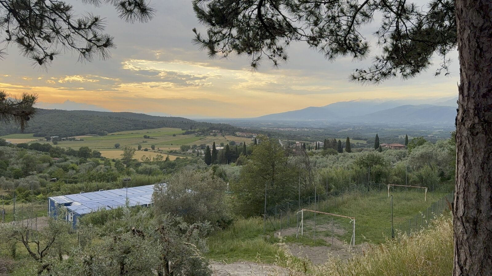
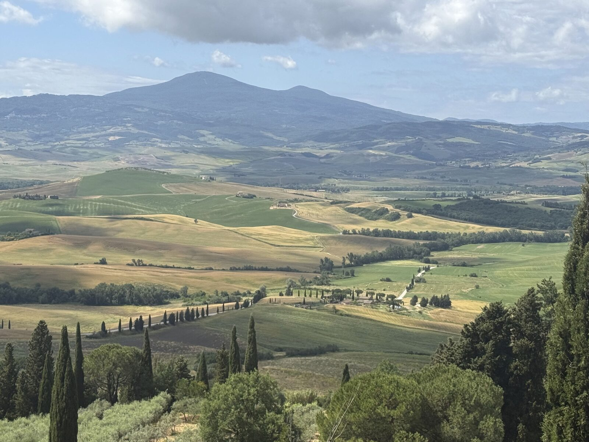
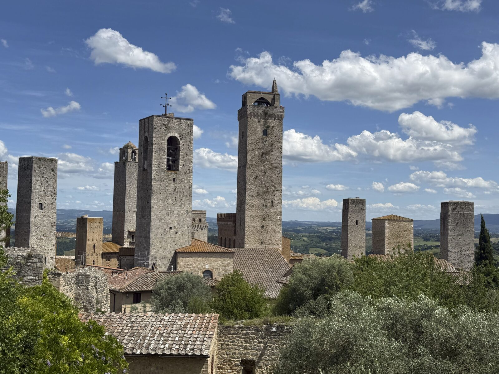
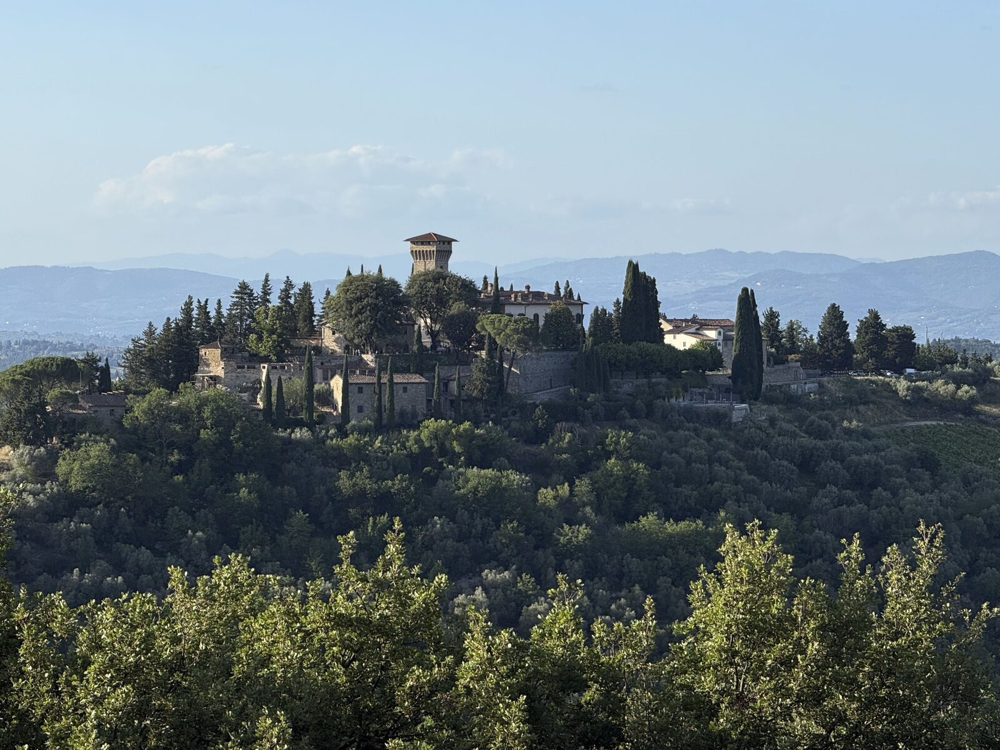
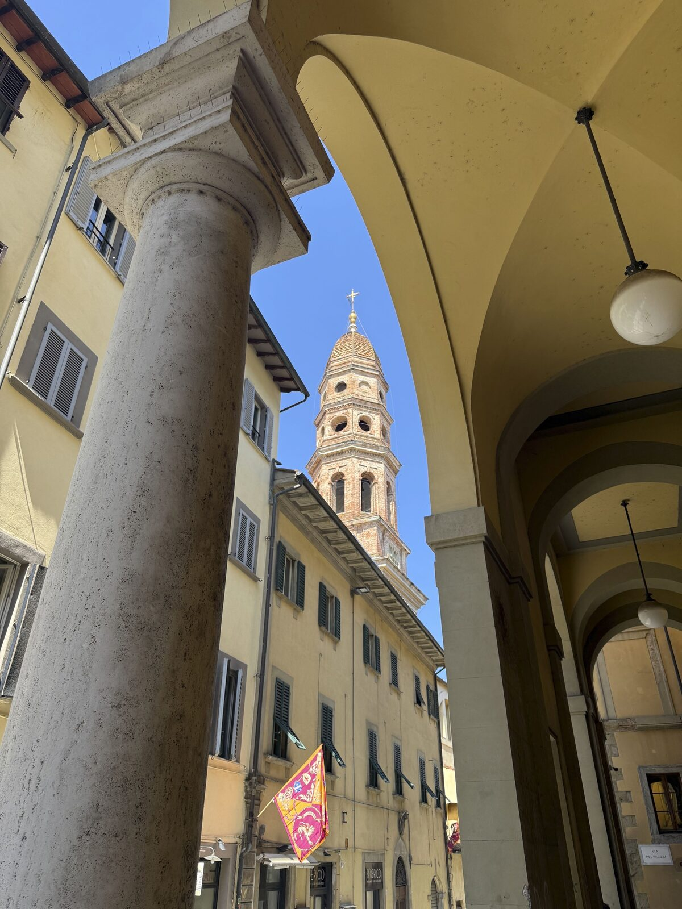
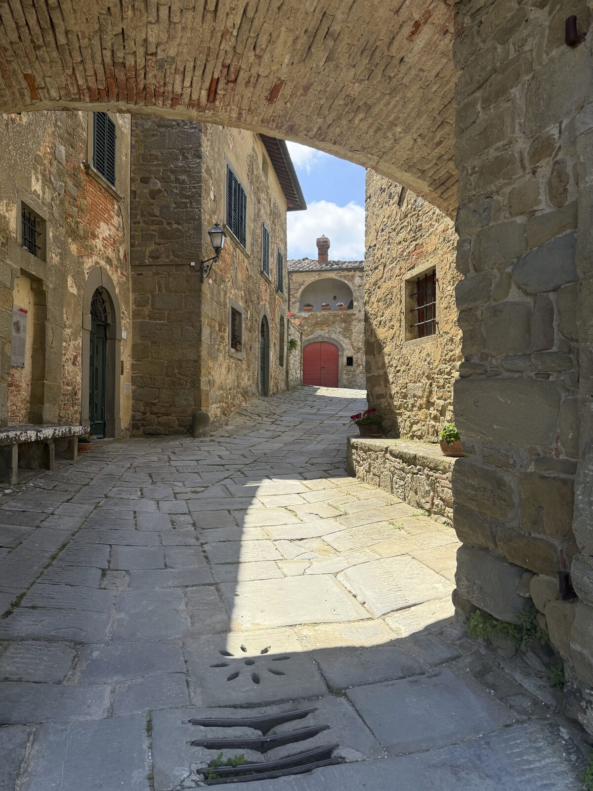
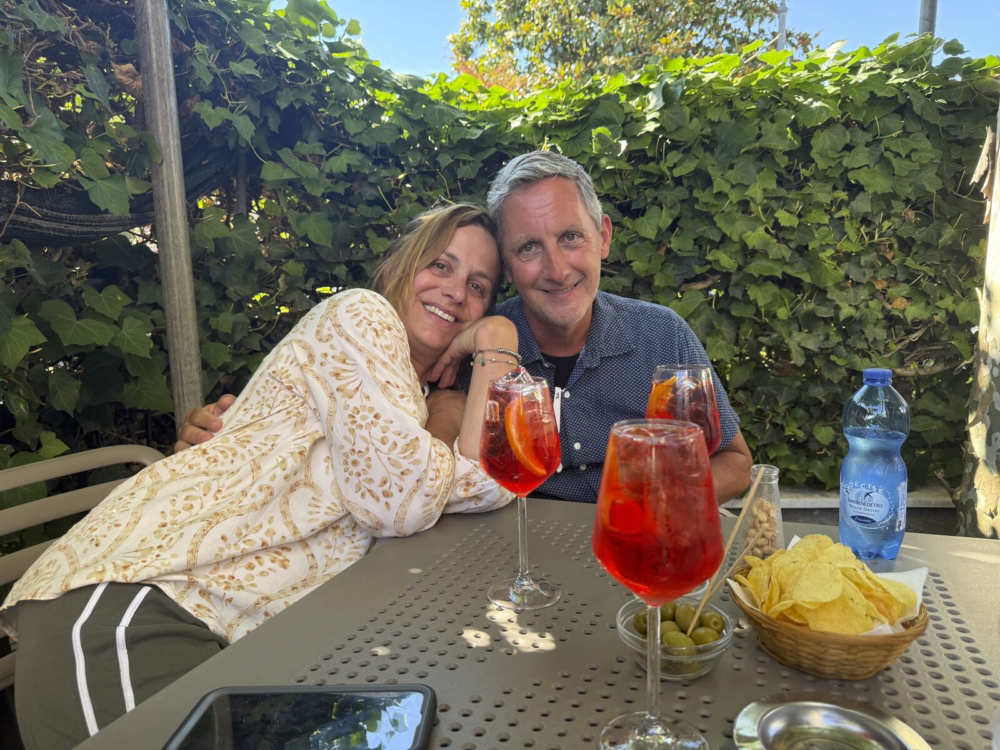
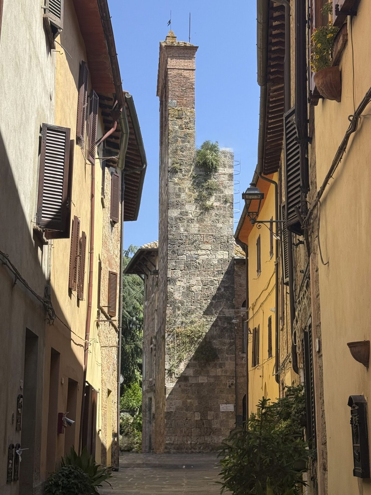

Six weeks in Italy
Puglia, Tuscany & beyond
Six weeks to kick off Mike’s retirement — three weeks in Puglia near Ostuni, then north to Tuscany’s eastern Valdarno. Our first trip where we truly lived like Italians. Come explore some highlights.

Flew into Bari and drove 90 minutes to our villa — a masseria in an ancient olive grove with a private pool, outdoor kitchen, and the kind of property that makes leaving feel like a mistake. Three weeks here.
Ostuni — restaurants, wine & excursions →
A UNESCO World Heritage Site known for its ancient cave dwellings — otherworldly and beautiful. One overnight at Le Malve Cave Retreat is exactly right. Don’t miss dinner at Osteria al Casale.

A fun half-day out to Ceglie Messapica — 20 minutes from the villa — to make Puglia’s signature pasta by hand. We ate what we made. Highly recommend.

The iconic trulli of Alberobello, a lunch stop in Locorotondo, and our favorite small town of Martina Franca for an afternoon spritz.

A hilltop villa in a tiny medieval village in the Valdarno, between Florence and Arezzo — with a working winery literally next door. Eastern Tuscany, which we’d never explored before.
Pergine Valdarno — restaurants, wine & day trips →
An hour’s drive for some of the most beautiful vistas in Italy — the Val d’Orcia from Pienza. Lunch at La Pecora Bianca at Podere Spedalone. Splurge on the Bistecca Fiorentina add-on.

Lunch with Dave’s Italian tutor Alic and her partner Jiri in the city of towers. Ristorante La Mandragola — a lovely afternoon in a remarkable medieval town.

Greve is the heart of Chianti — home to Giovanni Verrazzano, the first European to map the Atlantic coast of North America. Saturday market, a walk in the hills, lunch and aperitivo, an overnight, then a tour and wine-tasting dinner at the castello.

Twenty minutes from the villa. Lunch at Essenza on Piazza Grande — excellent. Easy to get to and well worth it.

Gargonza is a beautifully preserved 13th-century fortified borgo between Arezzo and Siena. Then on to Lucignano — the “pearl of Valdichiana” — a hilltop village whose unique elliptical layout has been unchanged for centuries.

The Moriconi family — dear friends we visit every time we’re in Italy. Two nights, lunches at the house of the grandparents, aperitivi, and a final dinner at Ristorante il Centauro in Pietrasanta.

An hour from the villa. The Etruscan Museum of Chiusi is one of the most important repositories of Etruscan remains in Italy. Lunch at La Solita Zuppa — highly recommended.
Six weeks. Every minute of it worth it.